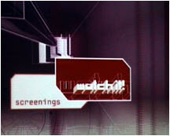

- software -
|
those are the truly interesting things that are worth pursuing. . i was at transmediale, and me and my LAN-friends actually got half the software award (the other half went to Alex MacLean) as well as two public awards (given by the visitors of transmediale) as well as an honorary mention in the interaction category for tracenoizer. matthew fuller for instance talked about how software designers design interfaces and how these then shape users. margarethe on the other hand talked more about the generative qualities of software. |
|  |
those are the truly interesting things that are worth pursuing. . i was at transmediale, and me and my LAN-friends actually got half the software award (the other half went to Alex MacLean) as well as two public awards (given by the visitors of transmediale) as well as an honorary mention in the interaction category for tracenoizer. matthew fuller for instance talked about how software designers design interfaces and how these then shape users. margarethe on the other hand talked more about the generative qualities of software. |
 |
Member of the European Coordination of Film Festivals E. . Kategorie Software --------------------------------------------------------------------------- 1. 02 awards - Die Nominierungen Drei international besetzte Jurys haben fuer den Wettbewerb der transmediale. Von ueber 800 Einsendungen wurden insgesamt 16 Projekte fuer drei Preise in Hoehe von jeweils 5. |
Member of the European Coordination of Film Festivals E. . Kategorie Software --------------------------------------------------------------------------- 1. 02 awards - Die Nominierungen Drei international besetzte Jurys haben fuer den Wettbewerb der transmediale. Von ueber 800 Einsendungen wurden insgesamt 16 Projekte fuer drei Preise in Hoehe von jeweils 5.
read more at: http://www.stern.de/computer-netze/software/programmhinweis/artikel_46729.html